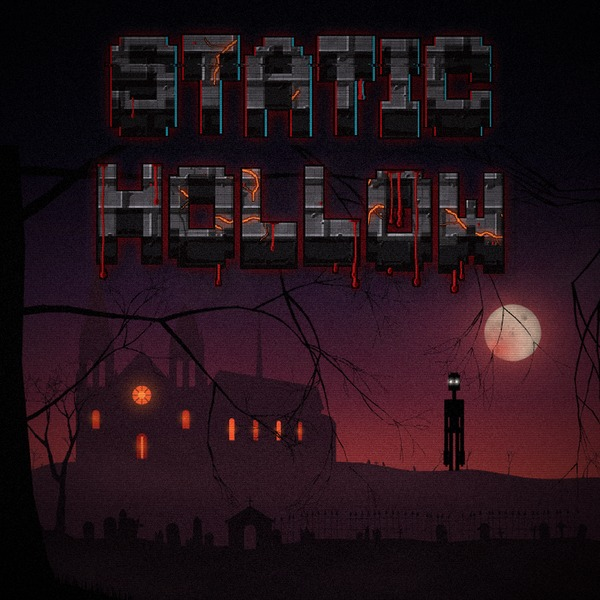

Since 1.55.0 none of Minecraft's own music plays in Static Hollow. Wherever and whenever the game would have played one of its pieces, one of the mod's plays instead: in the overworld, in Creative, under water, in the Nether, in the End, during the dragon's fight and over the credits. And it follows the story.
The soundtrack's own track list has 63 pieces, about 2 hours 20 minutes of music, as of 1.59.0. Chapter Eight added more after that: see Chapter Eight's music.

How it plays
- Minecraft's settings still count. Its Music volume and Music Frequency decide how loud and how often, as they always did.
- Now Playing. Minecraft's "Now Playing" corner names each piece: "Static Hollow - The Deep", or on the title screen "Static Hollow - Lullaby".
- The place or the chapter. Each time a new piece is due it's either the lullaby of the place you're in or one of the story chapter's own pieces. The further the story has got, the more often it's the chapter's (see the table below).
- Nothing over the scores. While one of the mod's own scores is playing, a boss fight's, a place's (Rosemont's) or a cutscene's, the background music stops and nothing new starts over it until it's done.
- Under the Dead Water each water has its own piece, and that comes first whenever you're under.
The story's music, chapter by chapter
The world keeps track of how far its story has got, and tells everyone in it (multiplayer too). "How often" is the chance that a new piece is one of the chapter's rather than the place's lullaby.
| Where the story is | From | Its pieces | How often |
|---|---|---|---|
| Before the altar | A new world | Lullaby | 15% |
| The Hollow | The Forsaken Altar is awake | Forsaken, Lullaby | 40% |
| Act Two | The Breach Altar is awake | The Treeline, Forsaken | 45% |
| The Bloom | The Gardener is dead | Pollen, The Approach | 45% |
| The Flesh | The Flesh is awake | The Flesh Wakes, Rosemont, The Laboratory Below, Shelter Dark, The Approach | 55% |
| The Static | The Bloom is dead | Dead Air, The Last Light, The Soul Remains | 50% |
| Signed off | The Null Static Zone has signed off | Dead Air, Signing Off (the record), The Last Light | 50% |
| The Deep | The Chorus has run, and isn't dead | The Deep, Dead Air | 55% |
| After | The Chorus, whole, is dead | Quiet Now, The Last Light, Signing Off (the record), Lullaby | 40% |
| The Door | The End's seal is broken | The Door, Quiet Now, The Last Light | 50% |
| The Vault | The seam in the screen is open | The Vault, The Door, Dead Air | 50% |
| The Other Side | His first reel has been run | The Vault, Dead Air, The Door | 55% |
| The Show Goes On | The last show | The Show Goes On, Quiet Now, The Last Light, Lullaby | 50% |
| The First Signal | After the Hub, once you've come down from it | The First Signal, The Door, Dead Air | 55% |
| The Dead Water | Through his portal, onto the rig | Dead Water, The First Signal, Low Tide | 60% |
Pieces in bold were written for that stage of the story. "Signing Off (the record)" is the music disc's longer version, not the short piece that plays as the Zone signs off.
The places' lullabies
Twelve pieces in the title screen's way, a broken music box over a cold drone, soft and far apart, the way Minecraft's own music comes. One for each kind of place:
| Piece | Where |
|---|---|
| Hollow Fields | Plains and meadows, and the Hollow Moor. Anywhere that isn't one of the others. |
| Under the Boughs | The woods, and cherry groves |
| Pine Needles | Taiga and groves |
| First Frost | Snow |
| High Places | The mountains and hills |
| Dry Bones | Desert, badlands and savanna, and the Signal Flats |
| Still Water | Swamps, and the Weeping Fen |
| Green Hush | The jungle |
| Low Tide | The sea, rivers and beaches, and anywhere under water |
| Hollows | Caves, and anywhere down in the dark under the ground |
| Embers | The Nether |
| Far Out | The End |
The Hollow Moor, the Signal Flats and the Weeping Fen are three of the Hollow's own country.
The soundtrack, all 63 pieces
As the soundtrack's own track list has them: the story's pieces in the order you meet them, then the music that plays in place of Minecraft's, then chapters six and seven.
The story's music
| # | Title | Length | When it plays |
|---|---|---|---|
| 1 | Lullaby | 1:39 | The title screen |
| 2 | The Flesh Wakes | 1:07 | When the Flesh wakes |
| 3 | Rosemont | 2:33 | In the streets of Rosemont |
| 4 | The Flesh's Mini-Boss | 3:02 | The Congregation, Specimen Zero, the Warden of Shelter No. 4, the Broodmother, the Amalgam |
| 5 | The Laboratory Below | 3:23 | Under the Laboratory |
| 6 | Shelter Dark | 3:43 | Down in Shelter No. 4 |
| 7 | The Approach | 2:33 | Walking up to the Bloom |
| 8 | The Gardener, Reborn | 3:22 | The Gardener, Reborn's fight |
| 9 | The Choir | 3:22 | The Gardener, Reborn's fight, when the Bloom opens its mouth |
| 10 | The Last Walk | 2:23 | Carrying the Device to the Bloom |
| 11 | The Soul Remains | 2:03 | After the blast |
| 12 | The Ending | 0:41 | The ending cutscene |
| 13 | The Ending (Late) | 0:22 | The ending cutscene, in a world whose Bloom had already burnt |
| 14 | The Last Light | 1:20 | After the ending |
| 15 | The Omni Ray | 1:17 | The Omni Orbital Railgun's cutscene |
| 16 | The Carrier | 2:38 | The Carrier's fight |
| 17 | Signing Off | 0:40 | The Null Static Zone signing off |
| 18 | Signing Off (Record) | 2:33 | The music disc |
| 19 | The Late Show | 0:38 | Arriving at the drive-in |
| 20 | The Chorus | 3:00 | The Chorus's fight in its pit |
| 21 | It Speaks | 0:42 | The cutscene where the hive speaks |
| 22 | The Mind | 0:34 | The cutscene where the Chorus rises |
| 23 | It Runs | 0:32 | The cutscene where the Chorus goes down |
| 24 | It Comes Up | 2:02 | The Reach's siege |
| 25 | The Deep | 2:33 | In the Deep |
| 26 | Stand Still | 2:33 | The Deaf King's fight |
| 27 | All of Them | 3:03 | The last fight: the Chorus, whole |
The music in place of Minecraft's (1.55.0)
| # | Title | Length | When it plays |
|---|---|---|---|
| 28 | Hollow Fields | 2:33 | Plains and meadows |
| 29 | Under the Boughs | 2:36 | The woods |
| 30 | Pine Needles | 3:03 | Taiga and groves |
| 31 | First Frost | 2:31 | The snow |
| 32 | High Places | 2:53 | The mountains |
| 33 | Dry Bones | 2:40 | Desert, badlands and savanna |
| 34 | Still Water | 2:37 | Swamps |
| 35 | Green Hush | 2:54 | The jungle |
| 36 | Low Tide | 2:45 | The sea, rivers and beaches, and under water |
| 37 | Hollows | 2:56 | Caves, and down in the dark under the ground |
| 38 | Embers | 2:31 | The Nether |
| 39 | Far Out | 2:23 | The End |
| 40 | Forsaken | 2:20 | The story's music once the Forsaken Altar is awake |
| 41 | The Treeline | 2:44 | The story's music in Act Two |
| 42 | Pollen | 2:13 | The story's music once the Gardener is dead |
| 43 | Dead Air | 3:03 | The story's music once the Bloom is dead |
| 44 | Quiet Now | 2:47 | The story's music after the Chorus, whole, is dead |
Chapter six: the Door at the End of the World (1.56.0 - 1.58.0)
| # | Title | Length | When it plays |
|---|---|---|---|
| 45 | The Door | 2:30 | The story's music once the End's seal is broken |
| 46 | The Stalls | 2:33 | In the Stalls |
| 47 | Standing Ovation | 3:02 | The Crowd's fight |
| 48 | Front Row | 0:44 | The Watcher in the front row |
| 49 | Behind the Picture | 2:34 | In the Watcher's Vault |
| 50 | The Watch | 0:43 | The Watcher at his wall of sets |
| 51 | The Projectionist | 2:52 | The Projectionist's fight |
| 52 | The First Reel | 0:41 | His first reel |
| 53 | The Vault | 3:23 | The story's music once the seam in the screen is open |
| 54 | Curtain Up | 0:45 | The first time through the black door |
| 55 | The Other Side | 2:35 | On the other side |
| 56 | What He Kept Out | 3:02 | The Viewer's fight |
| 57 | The Last Show | 1:13 | The last show, and the credits |
| 58 | Thank You for Watching | 2:33 | The record |
| 59 | The Show Goes On | 2:43 | The story's music after the last show |
Chapter seven: the First Signal (1.59.0)
| # | Title | Length | When it plays |
|---|---|---|---|
| 60 | The Hub | 2:35 | In the Hub - the realm he made |
| 61 | Enough | 2:05 | His speech in the Hub - and what comes through |
| 62 | It's Awake | 0:52 | Coming down from the Hub |
| 63 | The First Signal | 3:21 | The story's music in Chapter Seven |
Chapter Eight's music
The Dead Water (1.62.0 and 1.63.0) came after the track list, so these aren't on it yet:
- The Rig: the cutscene as you come down onto the rig.
- Dead Water: the story's own piece for Chapter Eight (with The First Signal and Low Tide).
- One piece for each of the Dead Water's waters, played while you're under: the Grey Shelf, the Haemal Reach, the Wireweed, the Lantern Fields, the Ossuary Flats, the Brine Sink, the Molar Reef, the Drowned Mycelia, the Rime Shelf, the Ember Vents and the Carrier Wave. In the twelfth, the Black Below, there's no music: only the sound of the ocean.
See the Dead Water for the waters themselves.
Records
Two of the pieces are music discs you can keep and play in a jukebox. Each shows as "Music Disc" with its title underneath.
| Disc | Length | Comparator | Where it comes from |
|---|---|---|---|
| Static Hollow - Signing Off | 2:33 | 6 | One of the Carrier's drops, when the Null Static Zone signs off. |
| Static Hollow - Thank You for Watching | 2:33 | 15 | You're sent home with it after the last show, at the end of chapter six. |